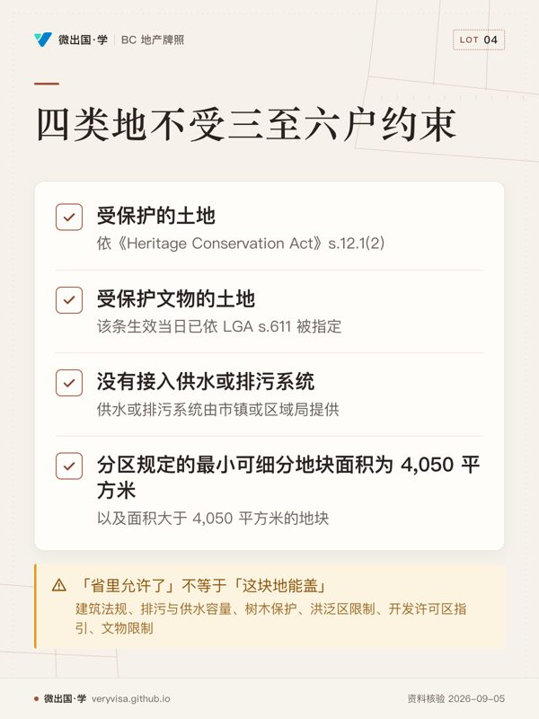

核实日期：2026-09-05。 法条侧回读的是 BC Laws 现行文本：《Local Government Act》Part 14 与《Community Charter》标注 current to 2026-09-01，《Vancouver Charter》标注 current to 2026-08-25。 政策侧回读的是省住房与市政事务厅的现行页（各页自标的最后更新日写在文末源表里）。
这一章教的是土地能拿来干什么——谁说了算、在哪一层说、你在柜台上去哪儿问。
它也是整本考试口径里结构最完好、内容最过时的一章。分区、OCP、许可、非合规使用这套骨架 2026 年照样成立； 但考试口径反复强调的那句底层判断——「密度和住宅形态由地方政府自己通过分区决定」——在 2023 年被省级立法整体推翻了。 2023 年秋季会期通过的三个法案（Bill 44 / 46 / 47），加上 2024 年的 Bill 16 与 2025 年的 Bill 25， 把「小型多户住宅必须允许」「捷运站周边最低密度」「符合社区规划的住宅改分区不许开公众听证」这些强制条款 写进了《Local Government Act》。考试口径定稿于 2020 年，一条都没有。
✕
这一章说错话的代价是最直接的
客户问「这块独立屋地能不能盖三户」，你按考试口径答「要看市里的分区，通常不行」—— 2026 年在多数城市这个答案是错的，而客户可能因此少出价、或者放弃一块本可以加密度的地。 反过来，你答「省里现在都允许了」也是错的：有一整张豁免清单，还有申请延期的市镇。 正确的动作永远是：查这块地所在市镇的现行分区图和最新的分区 bylaw，不是背一条省级规则。
一、制度地位：地方政府的权力是借来的
加拿大宪法只分了两级：联邦与省。市政府不是宪法主体，它是省立法机关创造出来的法人， 权力全部来自省法的授权（enabling legislation），省里改法就能收回或扩大——这不是理论上的可能，2023 年真的发生了。
BC 的授权法有三部：
| 法 | 授权给谁 | 备注 |
|---|---|---|
| 《Local Government Act》（地方政府法，LGA） | 区域局（regional district）的主体法；土地利用规划与文物保护部分对市镇同样适用 | 本章绝大多数条号出自它的 Part 14 |
| 《Community Charter》（社区宪章，CC） | 2004 年起市镇（城市、镇、区市、村）的核心授权法 | 建筑法规、营业执照、bylaw 程序在这里 |
| 《Vancouver Charter》（温哥华宪章，VC） | 只管温哥华市一个 | 全省唯一不在《Community Charter》下的市镇 |
《Local Government Act》创造了三层地方政府：
- 区域局（regional district）——全省除西北角一小块外全部划入，下分选区（electoral area）。 在没有市镇的非建制地区，区域局承担本该由市政府做的事。
- 市镇（municipality）——村（village）、镇（town）、市（city）、区市（district municipality）， 形态按人口定，但规划与土地利用的权力几乎完全相同，都由民选市长加四至八名市议员治理，任期四年。
- 改良区（improvement district）——省里应居民申请设立，通常只管供水、排污、排水、配电这类公用设施，由选出的受托人（trustees）治理，不设市长议会。
三者的地理范围会重叠：同一栋房子可能同时在一个区域局、一个市镇和一个改良区之内。
ℹ️
一条对客户很硬的规则：改分区不赔钱
《Local Government Act》s.458 明写：采纳 OCP、通过分区 bylaw、发出土地利用许可、终止土地使用契约 而造成的地价下跌或损失，一律不予补偿。 唯一的例外是把土地限定为公共用途的 bylaw。 所以「市里把我这块地从商业改成住宅，害我亏了钱，能索赔吗」——不能。这条 2020 年和 2026 年一样。
二、规划工具箱：六件工具，管的不是同一件事

| 工具 | 法源 | 管什么 | 时态 |
|---|---|---|---|
| 官方社区规划（official community plan, OCP） | LGA s.471–478 | 政策与地图指定，长期方向 | 未来 |
| 分区 bylaw（zoning bylaw） | LGA s.479 起 | 用途、密度、退线、高度、停车、招牌，当下 | 现在 |
| 乡村土地利用 bylaw（rural land use bylaw） | LGA s.457 | 区域局用的简化版，一份文件当 OCP 加分区用 | 两者兼有 |
| 细分 bylaw（subdivision bylaw） | LGA s.506 起 | 地块尺寸、道路、市政配套的标准 | 分割时 |
| 建筑 bylaw（building bylaw） | CC s.53–58 | 建造安全，建筑许可与验收 | 施工时 |
| 营业执照 bylaw（business licensing bylaw） | CC s.8(6)、s.59–61 | 谁能在这里做什么生意 | 经营时 |
OCP 与分区 bylaw 最容易被混成一件事。 分法很简单：OCP 是政策，分区 bylaw 是规则。 OCP 可能把一条街指定为「未来高密度住宅」，分区 bylaw 才规定这条街上现在的楼不得超过 12 米、 覆盖率不得超过 45%、离路边不得少于 4 米。OCP 采纳之后，此后所有的 bylaw、许可与工程必须与它一致； 想把地改成与 OCP 不符的用途，得先改 OCP。
⚠️
「这块地在 OCP 里是住宅」不等于「现在能盖住宅」
OCP 的地图指定的是打算怎么用，分区 bylaw 管的是现在能怎么用。 一块 OCP 指定为未来高密度、分区仍是单户住宅的地，今天只能盖单户住宅； 它的价值在于改分区有指望（而且 2023 年以后这条路顺畅了很多，见第四节）。 给客户看图时，两张图都要看：OCP 图与官方分区图，而且分区图必须以市里认证的那一份为准—— 网上挂的版本未必反映最近一次修订。
分区 bylaw 通常有三块：官方分区图、通用释义与管理条款、各分区自己的规定。 分区代号没有全省统一标准，但实务上相当一致：A 农业、R 住宅（RS 单户、RM 多户，后面再加数字分档）、 I 机构、M 工业、CD 综合开发区（针对某一块地单独定的）。分区界线一般跟着地界或路巷中线走。
除了用途，分区 bylaw 还常规定：一块地上建筑数量（近年多数城市允许加建巷屋 laneway house 或马车屋 coach house）、 退线与庭院（set-back / yard）、高度、密度（最常用楼面积比 floor space ratio， 0.5 的 FSR 用在 1,000 平方米地块上就是总楼面积 500 平方米，与层数无关）、 家庭办公（home occupation）、场外停车与装卸、招牌。
三、考试口径 vs 2026 现行：八条错位
下表是这一章的核心。左列是 ©2020 考试口径教的，右列是 2026 年现行法。 考场按左列答，柜台按右列做——这是两码事，混起来两个方向都会出错。
| # | 考试口径（©2020）说 | 2026 现行是 | 依据与生效日 |
|---|---|---|---|
| 1 | 独立屋区能不能加户、能不能有独立套间，由地方政府用分区权自己决定 | 全省强制：独立屋/双拼分区必须允许小型多户住宅（SSMUH），分区 bylaw 须在 2026-06-30 前改到位 | LGA s.481.3；Bill 44（2023）＋ Bill 25（2025-11-27 通过） |
| 2 | 改分区一般要开公众听证 | 与 OCP 一致的住宅类改分区禁止开听证；SSMUH 合规分区禁止开听证 | LGA s.464(2)(3)(4)；Bill 44（2023） |
| 3 | OCP 要写「至少未来五年」的住宅需求 | 至少 20 年，且数字必须取自最新一份住房需求报告（HNR） | LGA s.473(1)(a)、s.473.1(3)；Bill 44（2023） |
| 4 | 无（考试口径零内容） | 捷运导向区（TOA）：省定最低密度、场外住宅停车下限归零 | LGA s.481.01、s.525.1、Division 23；Bill 47（2023） |
| 5 | 社区便利设施捐助（CAC）只能协商，地方政府无权单方要求 | 便利设施费（ACC）可由 bylaw 单方设定并强制征收；DCC 用途扩到消防、警察、固废回收与省市共担公路 | LGA Division 19.1（s.570.1 起）、s.559(2)(2.1)；Bill 46（2023） |
| 6 | 土地使用契约（LUC）「多半仍然有效」，2014 年修法定于 2024 年前终止 | 全部已于 2024-06-30 终止，不予补偿 | LGA s.547(1)、s.458(1)(d) |
| 7 | 温哥华宪章与其他市镇的差异「不值得在本章特别说明」 | 至少两处直接影响估值：非合规使用中断 90 天（非全省的 6 个月）、火损 60%（非全省的 75%） | VC s.568(3)(5) |
| 8 | 无（考试口径零内容） | 省可对市镇下达住房目标令；市镇可立租客保护 bylaw、可用包容性分区强制配建可负担单位 | 《Housing Supply Act》2023-05-31 起；CC s.63.2、LGA s.482 起；Bill 16（2024-04-25 御准） |
🔧
这张表怎么用
正式考试按注册课程现行考纲及官方更新准备。 实务：跟真客户讲话时按右列，而且要落到「这块地在哪个市镇、那个市镇的分区 bylaw 改完了没有」。 两个口径不冲突的地方（OCP 与分区的关系、非合规使用的原理、许可的种类）考试口径照样能用。
四、小型多户住宅（SSMUH）：考试口径那条底层判断被推翻的地方
《Local Government Act》s.481.3 是 2023 年 Bill 44 加进去的。它不是给地方政府一项权力， 而是给地方政府一项义务：分区 bylaw 必须允许下面这些用途和密度，不允许就是违法。
省住房与市政事务厅现行页（2026-01-20 更新）给的门槛是：
| 情形 | 最低必须允许 |
|---|---|
| 全省的单户住宅分区（不需要三至六户分区的地方） | 独立套间（secondary suite）和／或独立副住宅单元（ADU，如花园屋、巷屋） |
| 单户或双拼分区，且在城市增长边界内、或人口 5,000 以上市镇内 | 地块 ≤280 平方米：至少 3 户；地块 >280 平方米：至少 4 户 |
| 同上，且靠近高频公交、地块 >280 平方米、市镇或区域局人口 ≥5,000 | 至少 6 户 |
「高频公交站」是有定义的：同一站至少有一条线路做到周一至五 07:00–19:00 平均每 15 分钟一班， 周六周日 10:00–18:00 平均每 15 分钟一班。
豁免（LGA s.481.4(1)）——这四类地不受三至六户那一档约束：
- 依《Heritage Conservation Act》s.12.1(2) 受保护的土地；
- 该条生效当日已依 LGA s.611 被指定为受保护文物的土地；
- 没有接入市镇或区域局提供的供水或排污系统的土地；
- 分区规定的最小可细分地块面积为 4,050 平方米的分区内的土地，以及面积大于 4,050 平方米的地块。
⚠️
「省里允许了」不等于「这块地能盖」
SSMUH 只解决分区允不允许这一层。真要盖，还要过建筑法规、排污与供水容量、树木保护、 洪泛区限制、开发许可区（DP area）指引、文物限制这些独立的门。 一块靠山靠溪、落在自然环境保护型 DP 区里的地，分区上允许四户，实际能不能建四户是另一回事。 给客户的话术只能到「分区这一层现在允许，能不能落地要向市里的规划与建筑部门确认」。
日期这一格要特别小心，因为它换过一次。 Bill 44 原定的分区改造截止日是 2024-06-30； 2025 年的 Bill 25（《Housing and Municipal Affairs Statutes Amendment Act, 2025》， 2025-10-09 提出、2025-11-27 通过）扩大了「受限分区（restricted zone）」的定义、 补上了可由省里规定的场地标准（可建面积、建筑数量、住宅形态、停车要求）， 并把新要求的合规截止日定在 2026-06-30（LGA s.481.3(2)，温哥华宪章 s.565.03(2) 同日）。 已申请延期的市镇例外。
停车也被动过：LGA s.525.2(1) 规定，自 2024-06-30 起，市议会不得对「6 户档」那些必须允许的住宅单元 要求场外停车位或装卸位。
五、捷运导向区（TOA）：考试口径零内容的一整套制度
Bill 47（2023）在《Local Government Act》里加了 Division 23，并配 s.481.01： 在捷运导向区（transit-oriented area）内、且分区允许住宅用途的地，地方政府不得用分区权 去禁止或压低省里规定的密度、建筑体量与尺寸。
省现行页（2026-07-22 更新）给的口径：
- 范围：快速公交站（如天车站）周边 800 米、公交换乘中心与西岸快车（West Coast Express）站周边 400 米；
- 数量：全省 104 个 TOA，分布在 31 个市镇，逐个列在 OIC 678-2023 里；
- 市镇必须以 bylaw 逐个划定 TOA（LGA s.585.52）；市镇不划或划得不合规， 省督会同行政局可以直接下令代为划定（s.585.53）；
- 停车：LGA s.525.1 规定，TOA 内地方政府不得要求场外住宅停车位， 无障碍停车位除外；商业用途停车与装卸位仍可要求。
ℹ️
TOA 与 SSMUH 是两套独立制度，别叠着背
SSMUH 管的是独立屋与双拼分区里最低允许几户，全省铺开； TOA 管的是特定 104 个点位周边的最低密度与停车，只在 31 个市镇里存在。 一块地可能两者都落进去，也可能只落进一个。判断顺序：先看这块地在哪个市镇、 是不是在某个 TOA 的 800／400 米范围内（要查那个市镇自己的 TOA bylaw 地图），再看它现在的分区。
六、公众听证：从「几乎总要开」变成「有些情况禁止开」
考试口径写的流程是：申请 → 员工审核 → 一读 →（多数地方政府要求）公众听证 → 二读 → 三读 → 满足条件 → 采纳。
程序骨架没变。bylaw 的表决次数：《Community Charter》s.135(1) 要求 bylaw 在采纳前须经三读， s.135(3) 要求三读与采纳之间至少隔一天——所以议员一共要投四次票，考试口径说的「四次表决」就是这个意思。 《Local Government Act》s.465(1) 规定：公众听证必须在一读之后、三读之前举行。
变的是听证还开不开。 LGA s.464 现在分成三档：
| 情形 | 结果 |
|---|---|
| 采纳 OCP bylaw、分区 bylaw、或提前终止土地使用契约的 bylaw | 原则上必须开听证（s.464(1)） |
| 该区域已有 OCP，且分区 bylaw 与 OCP 一致 | 不要求开（s.464(2)） |
| 已有 OCP、与 OCP 一致、唯一目的是允许一项住宅开发，且住宅部分占拟建总楼面积一半以上 | 禁止开（s.464(3)） |
| 分区 bylaw 的唯一目的是满足 s.481.3 的 SSMUH 要求 | 禁止开（s.464(4)） |
注意后两档用的词是「must not hold」——不是「可以不开」，是不许开。 不开听证时另有通知义务：LGA s.467 要求就一读发出书面通知，通知内容与送达范围照 s.466 的规则走。
✕
「邻居会在听证会上反对」这句话现在可能是错的
客户买一块打算加密度的地，最担心的往往是「邻居会不会闹到听证会把项目搅黄」。 2026 年，如果这个项目与 OCP 一致且住宅占比过半，根本不会有那场听证会。 公众参与被前移到了 OCP 的编制与更新——那时候要开听证，而且五年一轮。 这一条既是买方的机会，也是卖方（比如担心街对面盖楼的自住客户）该被提前告知的风险。
七、主动式规划：住房需求报告 → OCP → 分区，三级绑定
Bill 44 的另一半是把「先算需求、再改规划、再改分区」变成法定动作。省现行页（2025-09-19 更新）给的时间表：
| 日期 | 谁 | 必须做完什么 |
|---|---|---|
| 2025-01-01 | 所有地方政府 | 用统一方法完成过渡版住房需求报告（interim HNR） |
| 2025-12-31 | 市镇 | 依过渡版 HNR 完成 OCP 的首次审查与更新，并完成分区 bylaw 的首次更新 |
| 2028-12-31 | 所有地方政府 | 完成首份常规 HNR，此后每五年一次 |
| 2030-12-31 | 市镇 | 完成下一轮 OCP 与分区更新，此后每五年一次 |
法条侧：HNR 必须同时给出未来 5 年与未来 20 年所需住宅单元总数（LGA s.585.3(c)）； OCP 的住宅指定必须至少覆盖 HNR 里那个 20 年总数（s.473.1(3)）； 分区 bylaw 也必须允许足以容纳那个 20 年总数的用途与密度（s.481.7(1)）。 考试口径写的「至少五年」在 s.473(1)(a) 里已经改成「至少 20 年」。
另有一条考试口径完全没有的省级杠杆：《Housing Supply Act》2023-05-31 起生效， 省里可以对需求最迫切、人口增长最快的市镇下达住房目标令（housing target order）。 被下令的市镇须每期结束后 45 天内上报进度；进度不佳时，部长可指派顾问审查并下指令， 要求市镇制定或修改 bylaw、批准或否决某项许可；市镇仍不遵守的，省里可发省督令代为执行。 省方预期每财政年度对 16–20 个市镇下达目标令。
八、开发融资：DCC 扩围，CAC 被 ACC 取代
开发成本费（development cost charges, DCC） 的触发点没变：细分获批、或取得授权建造/改建/扩建的建筑许可 （LGA s.559(1)），并在获批或发证当时缴纳（s.559(4)）。
变的是钱能用来干什么。 考试口径列的是给排水、排污、排水工程、主干道、社区公园。 s.559(2)(a) 现在的清单是：排污、供水、排水、消防、警察、公路、固体废物与回收设施（场外停车设施除外）， 外加公园用地的提供与改善（s.559(2)(b)）；s.559(2.1) 另允许把 DCC 用于省市成本共担的公路设施 （如立交、出入口匝道），但市镇能收的部分不得超过它自己要承担的那部分成本（s.559(2.2)）。 在温哥华，这套东西叫开发成本征费（development cost levy, DCL）。
社区便利设施捐助（community amenity contribution, CAC）这一节要整段改。 考试口径说得很准确——在 2020 年，地方政府没有法律权力单方面把 CAC 作为改分区的条件，只能谈。 2023 年的 Bill 46 在《Local Government Act》里新设了 Division 19.1「便利设施成本回收」：
- 便利设施费（amenity cost charges, ACC）由 bylaw 设定，与 DCC 一样在细分获批或建筑许可签发时强制征收（s.570.2(1)(4)）；
- 用途是便利设施的资本成本——社区中心、康乐中心、托儿所、图书馆这一类， 且必须惠及该开发本身以及它带来的新增居住或工作人口（s.570.2(2)）；
- 便利设施须由市镇或区域局拥有，或由与其签有合作协议的主体拥有或运营（s.570.2(3)）；
- 立 ACC bylaw 之前必须与公众及受影响方咨询（s.570.3）。
Bill 16（2024，2024-04-25 御准）又补了两件考试口径没有的工具：包容性分区（inclusionary zoning）—— 市镇可以要求新住宅开发中的一部分单元用作可负担住房，可收现金代缴、也可经协议异地提供； 以及密度奖励（density bonus）规则的重写，要求市镇在立法或改法时做咨询与财务可行性分析。 现有的密度奖励 bylaw 须在 2026-06-30 前改到合规。
🔧
这一节对代理人的实际意义
你不会替开发商算 DCC 或 ACC。你要做的是别把「谈得下来」当成默认： 2020 年 CAC 是谈的，2026 年 ACC 是按 bylaw 收的。给做小型开发的买方客户报预算时， 「向市里问清楚适用哪几项收费、按什么单位计、有没有豁免」是必须留下的一句提醒， 数字本身回市政厅拿，不引任何二手表格。
九、非合规使用：原理不变，两套数字要分开记
分区 bylaw 没有溯及力。一块地在新 bylaw 通过时正在合法使用，而这个使用不符合新 bylaw， 它就成为合法非合规使用（legal non-conforming use），俗称 grandfathered。 可以是用途上的非合规（住宅区里的废车场），也可以是退线、体量上的非合规 （二十年前按 2 米侧退线合法建的房子，现在的 bylaw 要求 3 米）。
《Local Government Act》口径（全省，温哥华除外）：
| 规则 | 条号 |
|---|---|
| 非合规使用可以延续，随所有权更迭不受影响 | s.528(1)、s.534 |
| 停用连续 6 个月即丧失身份，此后一切使用须合规 | s.528(2) |
| 季节性与农业用途的正常周期不算「停用」 | s.528(3) |
| bylaw 通过时正在合法施工的建筑，视为已存在、已按建筑许可的用途在使用 | s.528(4) |
| 非合规使用只占建筑一部分的，可扩展到整栋建筑；但土地的非合规使用不得扩大范围 | s.528(5)、s.530 |
| 非合规使用延续期间，不得对建筑作结构性改建或加建（法律另有要求或获变通委员会批准者除外） | s.531 |
| 建筑损毁达地基以上价值的 75% 或以上（由建筑检查员认定）的，不得按原非合规用途修复或重建 | s.532(1) |
| 不合规产权形态（如分区限定为出租而单元不是出租）另有一套延续规则 | Division 14.1（s.535.1 起） |
《Vancouver Charter》口径（只管温哥华市）：
| 规则 | 条号 |
|---|---|
| 非合规使用停用 90 天即丧失身份；变通委员会可把这 90 天延长至最多 180 天 | s.568(3) |
| 非合规建筑因火灾损毁达地基以上价值的 60% 或以上（由市建筑检查员认定，可由变通委员会复核）的，未获批准不得修复或重建 | s.568(5) |
| 结构性加建或改建：非合规在用途上的须经变通委员会批准，非合规仅在规定上的须经规划总监批准 | s.568(4) |
⚠️
考试口径那句「不值得特别说明」在温哥华会让你算错价
考试口径正文只给了全省的 6 个月与 75%，括号里带了一句「温哥华 90 天」， 然后在讲温哥华宪章时说两法差异「不值得在本章特别说明」。 但 BC 的地产从业者大多在大温工作：90 天 vs 6 个月决定了一个空置的非合规商铺还剩多少缓冲， 60% vs 75% 直接改变一栋非合规老楼的火险重建预期与买家出价。 正式考试按注册课程现行考纲及官方更新准备；柜台上先问一句「这处物业在不在温哥华市界内」。
给买家的动作：卖一处有既存用途的物业，代理人有责任分清它是合规、合法非合规、还是违法使用。 合法非合规的物业，很多保险公司会限制承保额度；打算重建或加建的买家尤其要被告知上面那两条门槛。
十、四种许可与变通委员会：谁能变什么
| 工具 | 谁批 | 能变什么 | 不能变什么 |
|---|---|---|---|
| 开发许可（development permit, DP） | 地方政府 | 该地块的建造与改建条件，按 OCP 里该 DP 区的指引 | 只能用在 OCP 已划定的 DP 区内 |
| 开发变通许可（development variance permit, DVP） | 议会/董事会以决议签发（s.498(1)） | 分区、细分配套、其他土地利用规定、农业经营 bylaw 等多类 bylaw 的规定 | 不得变更用途或密度；不得变更出租产权分区的适用；不得变更洪泛区标高（s.498(2)(a)、(a.1)、(b)） |
| 临时使用许可（temporary use permit, TUP） | 地方政府 | 一段时间内的特定用途；可要求拆除、复原与保证金 | 期限最长 3 年，只能续期一次（s.497） |
| 变通委员会命令（board of variance order） | 独立任命的委员会（s.536–544） | 只限微小变通：建筑的位置、体量、尺寸，以及 s.531(1) 结构改建禁令的豁免 | 不得变更用途或密度；不得与地契上的 s.219 契约、土地利用许可、分阶段开发协议、洪泛区标高冲突（s.542(1)(c)、s.542(2)） |
DP 区必须先在 OCP 里划定，且只能出于法定目的（LGA s.488(1)）：自然环境保护、危险条件防护、农业保护、 商业区更新、密集住宅／商业工业多户住宅／度假区的形态与特征、节能、节水、减排—— 以及 2024 年 Bill 16 新加的 s.488(1)(k)：减轻重建导致租户被迫搬迁的影响。 考试口径那张清单里没有这最后一项。
一旦划为 DP 区，未取得开发许可不得细分、不得开工建造或改建（s.489）。开发许可通常是建筑许可的前置条件。 许可会在地契上留法律注记（legal notation），注记本身不含内容，要拿到许可全文必须去找地方政府。
变通委员会不是可选项：LGA s.536(1) 规定，凡采纳了分区 bylaw 的地方政府必须以 bylaw 设立变通委员会； 委员不得是议员、规划咨询委员会成员或该地方政府的官员雇员，任期三年。 委员会要下命令，须先听取申请人与被通知的邻居意见，认定遵守 bylaw 会造成不当困难（undue hardship）， 且认定该变通不会造成场地不当开发、不损害自然环境、不实质影响邻地的使用与享用、 不变更用途与密度、不违背 bylaw 本意（s.542(1)(c)(iv)、(v)）。
ℹ️
DVP 与变通委员会：客户可以选路
两者能达到相似的结果，差别在谁批和能变多宽。DVP 由民选议会签发，能变的 bylaw 种类广得多 （分区、施工、活动房屋、停车、招牌、绿化遮挡、径流控制、细分配套、最小地块面积）； 变通委员会由独立委员组成，只能就分区 bylaw 的位置、体量、尺寸作微小变通。 两条路都不保证成功——议会完全可以拒绝，要求申请人走完整的改分区程序。
十一、土地使用契约：一个已经关闭的历史章节
1971 至 1978 年间，《Municipal Act》允许地方政府与土地所有人签土地使用契约（land use contract, LUC）—— 一份写明这块地能盖什么的合同，登记为地契上的限制性契约，效力优先于分区 bylaw。 1978 年起不再签发新的。
考试口径（©2020）说这些旧契约「多半仍然有效，除非双方同意终止」，并提到 2014 年修法要求 2024 年前全部终止。 2026 年的事实是：这件事已经完成了。 LGA s.547(1)：所有土地使用契约于 2024-06-30 终止； s.547(2) 要求相关地方政府必须在 2022-06-30 前采纳一份将在 2024-06-30 生效于该地块的分区 bylaw。 提前终止的 bylaw 也不得在 2022-06-30 之后采纳（s.548(3)(a)）。终止不予补偿（s.458(1)(d)）。
留下来的尾巴是有的：LUC 终止时该地正在合法使用的，那个使用作为非合规使用继续（s.533）； 因提前终止而遭受困难的，可向变通委员会申请豁免（s.543）。旧地契上仍会留着 LUC 的登记注记。
🔧
看到地契上有 LUC 注记怎么办
这条注记本身仍会出现在旧物业的地契上，但它现在不再是有效的土地利用规则—— 管这块地的是 2024-06-30 起生效的那份分区 bylaw。 柜台上的动作：把注记查出来，告诉客户「这是已终止的历史契约，现行规则以市里的分区 bylaw 为准」， 并建议客户就该物业的现状使用是否构成合法非合规使用去咨询律师——判断这个不是代理人的活。
十二、细分、建筑与营业执照：三道容易被漏掉的门
细分由《Land Title Act》与《Local Government Act》共同管。批准官（approving officer）由市议会任命， 通常是市政工程师或规划师；他依《Land Title Act》s.85(3) 可以以「有违公共利益」为由拒批， 而法院复核这类决定的空间极窄——只在恶意、意图歧视某业主、或依据「站不住脚且完全不充分的事实基础」时才干预。
细分还会触发公园用地义务（LGA s.510）：业主自行选择无偿提供公园用地、或按该用地市值付款； 数量上限为拟细分土地的 5%（s.510(5)）； 下列情形不适用：新增地块少于 3 块、最小新地块大于 2 公顷、既有地块合并（s.510(3)）—— 但若被细分的地块本身是过去 5 年内由细分产生的，「少于 3 块」这一条豁免不成立（s.510(4)）。
建筑 bylaw 的目的是公共健康与安全，通过两件事落地：建造、改建、修缮、移动、拆除， 或安装电气、管道、供暖设备，一律需建筑许可；建筑检查员负责查工程是否符合获批图纸。 复杂建筑（多户住宅、较大商业与工业建筑、机构建筑）按 BC 建筑规范要求由业主聘注册专业人士 （工程师、建筑师）出具符合性证明并做现场审查，检查员只作抽查—— 后果是：房子出问题时，业主的救济对象通常是那位注册专业人士，不是地方政府。
违反建筑 bylaw 的后果不止罚款：地方政府可以下令拆除、清除、整改或停工； 《Community Charter》s.57 允许在地契上加注建筑法规违规注记。 注记的触发有两类（s.57(1)）：检查员发现某个状况导致建筑不安全或无法在正常寿命内按预期用途使用； 或者发现某项本该取得许可、通过验收的工程没有取得许可或没有通过验收。 程序上要先书面通知登记业主、给建筑检查员与业主陈述机会，再由议会决议指示公司事务官去土地登记处备案。
✕
s.57 注记是这一章最直接的成交风险
地契上出现「BYLAW CONTRAVENTION NOTICE, COMMUNITY CHARTER, SECTION 57」这行字， 意味着市里的建筑检查员已经认定这处物业的施工不合规。 代理人的动作是三步：查出来 → 告诉买方 → 建议买方就该注记对其权利的影响取得法律意见。 光看地契还不够——不是所有整改令都会上地契，每一处挂盘和每一处拟购物业都该去市政厅记录里查一遍。
营业执照 bylaw 是最常被漏掉的一道门。《Community Charter》s.8(6) 授权议会以 bylaw 规管商业； s.60 规定执照申请不得被不合理地拒绝，拒绝时须应要求给出书面理由， 吊销或暂停前须通知持照人并给其陈述机会。 市镇一般不直接禁止某类生意，但可以用极高的执照费、或用执照 bylaw 里的具体禁止条款达到同样效果。
⚠️
分区允许 ≠ 能开这门生意
这是考试口径举的那个例子的骨架：客户想开宠物店，代理人查了分区 bylaw， 确认该地块允许零售，于是建议买下；买下后申请营业执照， 才发现该市的营业执照 bylaw 明文禁止宠物店销售猫狗。地买了，生意开不成。 做商业物业时，分区 bylaw 与营业执照 bylaw 是两份要分别查的文件。
十三、柜台上怎么做：一份挂盘/看房前的清单
- 确定管辖层级：这块地在哪个市镇？还是在区域局的选区里？在不在温哥华市界内（第九节那两个数字不同）？
- 两张图都要：OCP 的土地利用指定图，以及市里认证的官方分区图。网上版本未必最新， 涉及交易的以规划部门给出的书面回复为准。
- 调分区条文：允许用途、密度／FSR、高度、退线、每块地允许的建筑数量、场外停车。
- 问 SSMUH 与 TOA 两句话：这块地所在分区是否属于必须允许小型多户住宅的受限分区？ 这块地在不在该市镇已划定的某个 TOA 内？——这两个问题只有市里能给出确定答案。
- 地契上的四类注记：土地利用许可（DP/DVP/TUP）、已终止的土地使用契约、 s.219 限制性契约、以及《Community Charter》s.57 建筑法规违规注记。注记只给线索，全文要去市政厅调。
- 既存用途定性：合规／合法非合规／违法。涉及独立套间的， 要独立向地方政府核实其合法性，不能只依赖物业披露声明（Property Disclosure Statement）上的勾选。
- 商业物业加一步：营业执照 bylaw。
- 书面提问、书面存档。市政窗口习惯于回答持牌人的询问；把问题和回复留成文字，是日后唯一站得住的记录。
ℹ️
独立套间与短租：两处交给别章的接口
未取得建筑许可与验收的独立套间，在现行执业规则下属于「缺少适当的市政建筑及其他许可」， 落入重大潜在缺陷（material latent defect）的定义，挂盘方须向交易各方披露； 把这种套间当作「按揭助手」去做广告，也会踩到禁止虚假误导广告的条文。 监管机构与规则条号的现行版本在牌照与执业那一章讲。 短租另有一层：考试口径写的是「地方政府用分区 bylaw 禁止 30 天以下的短租」， 2026 年这上面还叠了一部省法与一套省级登记制度，省法会覆盖市镇 bylaw 的一部分，细节在租赁那一章。
十四、三个情景
情景一：地块能不能加户。 李女士在某人口约 4 万的市镇看中一块 320 平方米的独立屋地，问能不能拆了盖四户联排。 代理人的正确回答不是「省里现在允许 3–4 户，可以」，也不是「要看市里，多半不行」，而是： 「按省里 2023 年以来的规则，人口 5,000 以上市镇的城市增长边界内、面积大于 280 平方米的单户地块， 分区上至少要允许 4 户，市镇的分区 bylaw 须在 2026-06-30 前改到位； 但有一张豁免清单，也有申请延期的市镇。我去跟规划部门核实这块地现在的分区允许几户，并把回复给你书面。」 ——注意第三句才是代理人真正的动作。前两句只是让客户知道值得去问。
情景二：邻居的反对不会发生。 陈先生打算买入一块 OCP 指定为多户住宅、现分区仍为单户的地，最担心「改分区时邻居闹起来」。 按 2026 年的 LGA s.464(3)，如果拟议的分区 bylaw 与 OCP 一致、唯一目的是允许一项住宅开发、 且住宅部分占拟建总楼面积一半以上，地方政府不得就此举行公众听证。 风险因此从「听证会被否」转移到了「这个方案到底算不算与 OCP 一致」—— 而这是规划部门与开发方律师之间的判断，代理人的动作是把这个判断点指出来，并建议客户取得法律与规划专业意见。
情景三：温哥华的一处空置非合规商铺。 王先生在温哥华市界内持有一处地面层商铺，所在分区多年前改为纯住宅，该商业用途属合法非合规。 店铺去年 10 月退租至今空置。他问「还能不能再租给一家新的店」。 温哥华宪章 s.568(3) 的口径是：非合规使用停用 90 天即丧失身份， 变通委员会可将这 90 天延长至最多 180 天——不是全省那个 6 个月。 代理人的动作：把这条时限提示出来，让客户立即去查停用起算日并向市里/变通委员会确认， 不替客户算准确天数、不替客户判断该用途是否已经失效——这是律师与市政窗口的事。 同一处物业若日后遭火灾，重建门槛也是温哥华的 60%，不是全省的 75%。
术语双语对照
| 中文 | 英文 | 备注 |
|---|---|---|
| 授权立法 | enabling legislation | 地方政府权力的来源；省里改法即可收回 |
| 官方社区规划 | official community plan（OCP） | 政策与长期方向；住宅需求期限已由 5 年改为 20 年 |
| 分区 bylaw | zoning bylaw | 管当下的用途与密度 |
| 楼面积比 | floor space ratio（FSR） | 总楼面积 ÷ 地块面积，与层数无关 |
| 小型多户住宅 | small-scale, multi-unit housing（SSMUH） | 独立套间、副住宅单元、三户屋、联排、多户屋 |
| 副住宅单元 | accessory dwelling unit（ADU） | 花园屋、巷屋这一类独立副屋 |
| 捷运导向区 | transit-oriented area（TOA） | 快速公交站 800 米／换乘中心与西岸快车站 400 米 |
| 住房需求报告 | housing needs report（HNR） | 须同时给 5 年与 20 年所需单元总数 |
| 住房目标令 | housing target order | 省依《Housing Supply Act》对市镇下达 |
| 开发成本费 | development cost charges（DCC） | 温哥华称 development cost levy（DCL） |
| 便利设施费 | amenity cost charges（ACC） | 2023 年新设，取代只能协商的 CAC |
| 社区便利设施捐助 | community amenity contribution（CAC） | 协商性质，无单方强制权 |
| 合法非合规使用 | legal non-conforming use | 俗称 grandfathered |
| 变通委员会 | board of variance | 只能作微小变通，不得变更用途与密度 |
| 开发许可 | development permit（DP） | 只能用于 OCP 划定的 DP 区 |
| 开发变通许可 | development variance permit（DVP） | 议会决议签发，不得变更用途与密度 |
| 临时使用许可 | temporary use permit（TUP） | 最长 3 年，只能续期一次 |
| 土地使用契约 | land use contract（LUC） | 全部于 2024-06-30 终止 |
| 批准官 | approving officer | 依《Land Title Act》s.85(3) 可以公共利益为由拒批细分 |
| 重大潜在缺陷 | material latent defect | 缺少适当市政许可即落入此定义 |
| bylaw 违规注记 | bylaw contravention notice | 《Community Charter》s.57，加注在地契上 |
源表（本篇判据）
| # | 事实 | 一手源 | 核实日 |
|---|---|---|---|
| 1 | SSMUH 强制条款、豁免、公众听证三档、OCP 20 年、分区须容纳 20 年需求 | BC Laws《Local Government Act》Part 14（current to 2026-09-01）s.464 / 473 / 473.1 / 481.3 / 481.4 / 481.7（BC Laws（King's Printer）） | 2026-09-05 |
| 2 | 3／4／6 户门槛、280 平方米线、人口 5,000 线、高频公交定义、2026-06-30 合规日 | gov.bc.ca 小型多户住宅页（页面自标 2026-01-20 更新）（BC 住房与市政事务厅（gov.bc.ca）） | 2026-09-05 |
| 3 | TOA 800／400 米、104 个 TOA、31 个市镇、住宅停车下限归零 | gov.bc.ca 捷运导向区页（页面自标 2026-07-22 更新）（BC 住房与市政事务厅（gov.bc.ca）） | 2026-09-05 |
| 4 | HNR／OCP／分区更新的四个法定日期 | gov.bc.ca 主动式规划页（页面自标 2025-09-19 更新）（BC 住房与市政事务厅（gov.bc.ca）） | 2026-09-05 |
| 5 | DCC 用途扩到消防、警察、固废回收与省市共担公路；ACC 覆盖社区中心、康乐中心、托儿所、图书馆 | gov.bc.ca 开发融资页（页面自标 2025-12-18 更新）（BC 住房与市政事务厅（gov.bc.ca）） | 2026-09-05 |
| 6 | 非合规使用 6 个月与 75%、变通委员会强制设立与权限、LUC 2024-06-30 全部终止、TUP 3 年一续、公园用地 5% | BC Laws《Local Government Act》Part 14 s.497 / 498 / 510 / 528–536 / 542 / 547 / 559 / 570.2（BC Laws（King's Printer）） | 2026-09-05 |
| 7 | 温哥华 90 天（可延至 180 天）与火损 60% | BC Laws《Vancouver Charter》s.568（current to 2026-08-25）（BC Laws（King's Printer）） | 2026-09-05 |
| 8 | 《Housing Supply Act》2023-05-31 起、住房目标令、45 天上报、顾问与指令、每年 16–20 个市镇 | gov.bc.ca 住房目标页（页面自标 2026-08-06 更新）（BC 住房与市政事务厅（gov.bc.ca）） | 2026-09-05 |
| 9 | 包容性分区与密度奖励（2024-04-25 御准，现有密度奖励 bylaw 须 2026-06-30 前合规）、租客保护 bylaw | gov.bc.ca 地方政府新工具页（页面自标 2025-12-23 更新）（BC 住房与市政事务厅（gov.bc.ca）） | 2026-09-05 |
| 10 | Bill 25 于 2025-10-09 提出、2025-11-27 通过；扩大受限分区定义并新增可规定的场地标准 | news.gov.bc.ca 省住房与市政事务厅通报（2025-10-09）＋ gov.bc.ca 地方政府住房举措页（BC Gov News（住房与市政事务厅）） | 2026-09-05 |
| 11 | bylaw 三读加采纳、三读与采纳间隔至少一天；s.57 地契注记程序；s.60 营业执照不得被不合理拒绝；s.63.2 租客保护授权 | BC Laws《Community Charter》s.57 / 60 / 63.2 / 135（current to 2026-09-01）（BC Laws（King's Printer）） | 2026-09-05 |
待核清单（禁在对外产物中出现的数字）：
- 各市镇自己的分区数值（退线、高度、FSR、允许户数）——逐个市镇不同，且随时在改， 本篇一律不给具体数值，只给该去哪里查。
- SSMUH 场地标准的省级规定值（可建面积、建筑数量、停车位上限）——Bill 25 授权省里可以规定， 本篇只写「省里可以规定」，未核到已生效的具体数值前不给数字。
- DCC 与 ACC 的费率——完全由各市镇的 bylaw 决定，无省级统一值，只能回市政厅取当期费率表。
- 申请延期 SSMUH 合规的市镇名单与各自的延期到期日——须逐个市镇核。
- 考试口径举例中的市镇具体 bylaw 编号与费额——不转引，本篇只保留该例子的制度骨架。
本页知识卡
不看正文也能拿到这一节的核心内容：先看导读，再看图。点图放大，左右翻页。
- 先看先按所在地与地块条件定位适用档，再读对应下限。
- 易漏高频公交不是口语概念，还限定周一至五、周六周日的时段和班次。
- 下一步去练习按情形判档；项目能否落地另找市里确认。

- 先看先判断地块是否落入四类豁免之一，再谈三至六户那一档。
- 易漏豁免只针对三至六户那一档，不代表建设条件已经满足。
- 下一步去讲解核对分区以外限制，落地问题向规划与建筑部门确认。